Держатели дисконтной карты книжного магазина получают при покупке скидку 5%. Книга стоит 200 рублей. Сколько рублей заплатит держатель дисконтной программы за эту книгу?
На диаграмме показана среднемесячная температура воздуха в Минске за каждый месяц 2003 года. По горизонтали указываются месяцы, по вертикали — температура в градусах Цельсия. Какой из летних месяцев 2003 года в среднем был самым холодным? В ответе укажите среднюю температуру в этом месяце, в градусах Цельсия.
В таблице даны тарифы на услуги трёх фирм такси. Предполагается поездка длительностью 30 минут. Нужно выбрать фирму, в которой заказ будет стоить дешевле всего. Сколько рублей будет стоить этот заказ?
| Фирма такси | Подача машины | Продолжительность и стоимость минимальной поездки | Стоимость 1 минуты сверх продолжительности минимальной поездки (в руб.) |
|---|---|---|---|
| А | 250 руб | Нет | 13 |
| Б | Бесплатно | 20 мин — 400 руб | 17 |
| В | 120 руб | 10 мин — 150 руб | 14 |
Найдите площадь трапеции, вершины которой имеют координаты $(1;1)$, $(10; 1)$, $(9;8)$, $(4;8)$.
В случайном эксперименте бросают две игральные кости. Найдите вероятность того, что в сумме выпадет 4 очка.
Результат округлите до сотых.
Найдите корень уравнения $\sqrt{46 - 2x} = 4$.
В треугольнике $ABC$ угол $C$ равен $74^\circ$, $AD$ и $BE$ — биссектрисы, пересекающиеся в точке $O$. Найдите угол $AOB$. Ответ дайте в градусах.
На рисунке изображён график производной $y = f'(x)$ функции $f(x)$, определённой на интервале $(-8;9)$. Найдите количество точек минимума функции $f(x)$, принадлежащих отрезку $[-6; 8]$.
В правильной шестиугольной призме $ABCDEFA'B'C'D'E'F'$ все ребра равны 1. Найдите угол $ACC_1$. Ответ дайте в градусах.
Боковые стороны $KL$ и $MN$ трапеции $KLMN$ равны 8 и 17 соответственно. Отрезок, соединяющий середины диагоналей, равен 7,5, средняя линия трапеции равна 17,5. Прямые $KL$ и $MN$ пересекаются в точке $A$. Найдите радиус окружности, вписанной в треугольник $ALM$.
| # | Make | Model | Year |
|---|---|---|---|
| 1 | Honda | Accord | 2009 |
| 2 | Toyota | Camry | 2012 |
| 3 | Hyundai | Elantra | 2010 |